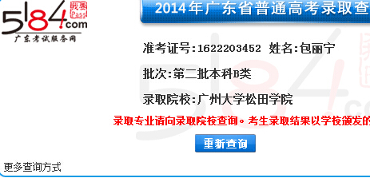
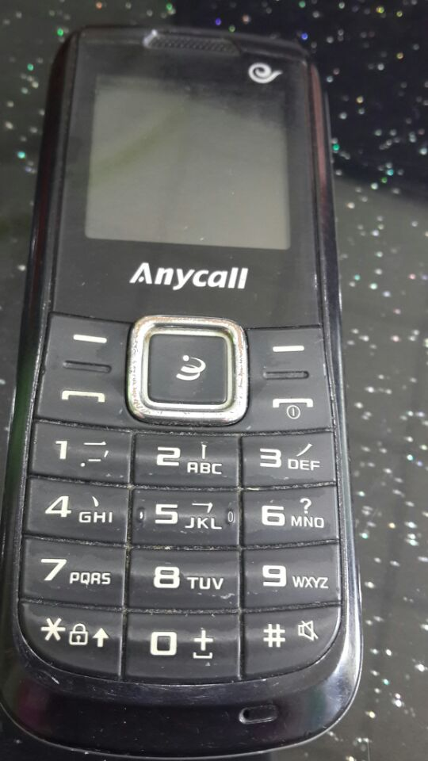

Conversation with 81184027 at Mon 11 Aug 2014 03:12:17 PM CST on 154115835 (webqq)
(08/11/2014 02:07:30 PM) 蛋包飯: 据说礼金最终还是会返回的，返回到你妻子的小金库中。
(08/11/2014 02:06:56 PM) 福建-福州&水浒: (#193905)他父母一分钱都没要我，还倒贴她女儿嫁过来
(08/11/2014 02:07:20 PM) 福建-福州&水浒: (#193906)礼金这东西是虚的，贵在感情
(08/11/2014 02:07:37 PM) 福建-福州&水浒: 嗯
(08/11/2014 02:07:45 PM) 福建-福州&水浒: 是这样的
(08/11/2014 02:07:30 PM) 蛋包飯: 据说礼金最终还是会返回的，返回到你妻子的小金库中。
(08/11/2014 02:06:56 PM) 福建-福州&水浒: (#193905)他父母一分钱都没要我，还倒贴她女儿嫁过来
(08/11/2014 02:07:20 PM) 福建-福州&水浒: (#193906)礼金这东西是虚的，贵在感情
(08/11/2014 02:07:37 PM) 福建-福州&水浒: 嗯
(08/11/2014 02:07:45 PM) 福建-福州&水浒: 是这样的
(03:12:34 PM) lost message from #193910 to #193962
(03:10:08 PM) 蛋包飯: 醒悟又在怀念前妻了:D
(08/11/2014 02:43:47 PM) 蛋包飯: (#193946)嗯，确实不要穷人的钱
(08/11/2014 02:44:34 PM) 福建-福州&水浒: (#193947)全能组织过的是共产主义生活
(08/11/2014 02:45:01 PM) 福建-福州&水浒: (#193948)富人给穷人捐钱，过教会生活，比马列主义靠谱
(08/11/2014 02:46:22 PM) 蛋包飯: (#193949)所以说马列主义没人信，邪教有人信。不过，她们自己并不认为是邪教。自认为是宗教信仰
(08/11/2014 02:47:58 PM) 醒悟: (#193950)那都去信吧
(08/11/2014 02:50:51 PM) 醒悟: (#193951)就是不工作别的也没啥:D
(02:53:05 PM) 蛋包飯: (#193952)信徒心术比较正
(02:53:19 PM) 蛋包飯: (#193953)我这样心术不正的信不了，迟早被开除
(02:58:13 PM) 福建-福州&水浒: (#193954):D
(02:59:10 PM) 蛋包飯: (#193955)赞美创造万物、赐生命的伟大的天父！你的爱何等广阔深高！新的一天，求主引导我们的心紧紧跟随主，我们的心思意念行在主的计划中。愿圣灵常常提醒我们要管住我们的口与心，感谢主，奉耶稣的名，阿们！
(03:03:40 PM) 醒悟: (#193957)都好人!
(03:04:12 PM) 醒悟: (#193958)那么说信的女人是个宝珍惜珍惜
(03:05:11 PM) 福建-福州&水浒: (#193959)本就该珍惜，用更高的理论征服她
(03:05:41 PM) 福建-福州&水浒: (#193960)毛列也行啊，因为毛列思想比全能组织邪多了
(03:05:49 PM) 福建-福州&水浒: (#193961)以邪治邪
(03:07:17 PM) 醒悟: (#193962):D
(03:10:25 PM) 醒悟: 有点
(03:15:00 PM) 福建-福州&水浒: :$
(03:15:31 PM) 蛋包飯: 
(03:15:31 PM) 蛋包飯: (#193966)
(03:02:55 PM) 魂: (#193956)
(03:16:26 PM) 醒悟: 包饭手机真不买吗:D
(03:16:53 PM) 福建-福州&水浒: 包饭舍不得票子
(03:19:00 PM) 蛋包飯: 坚决不买iphone:L
(03:19:15 PM) 醒悟: 舍不得票子没娘子:D
(03:19:55 PM) 醒悟: 米4，2千4
(03:20:12 PM) 醒悟: 她同意吗
(03:20:22 PM) 蛋包飯: 小米不会贵。
(03:20:42 PM) 福建-福州&水浒: 算啦
(03:20:51 PM) 蛋包飯: 不同意，坚持要iphone:L
但我不买iphone
(03:20:55 PM) 福建-福州&水浒: 还是另找一个啦
(03:21:10 PM) 福建-福州&水浒: 你上次不是说不找她了么
(03:21:28 PM) 福建-福州&水浒: 还要5代？
(03:21:35 PM) 福建-福州&水浒: 哇靠哇靠
(03:21:38 PM) 醒悟: 女人啥不得脱没钱
(03:21:41 PM) 蛋包飯: 不再找她了。她要iphone5
(03:22:14 PM) 蛋包飯: iphone5参考价格：￥3800
(03:22:14 PM) 紫罗兰: :D
(03:22:34 PM) 醒悟: :D纯粹砍你
(03:22:55 PM) 蛋包飯: 当我是ATM，提款机啊，我可不会印钞票
(03:24:28 PM) 福建-福州&水浒: :D
(03:24:41 PM) 福建-福州&水浒: 唉:pensive:，
(03:25:26 PM) 蛋包飯: 我自己用的手机是个杂牌。电子产品我已不再追求名牌了。一入手立即贬值.
(03:26:06 PM) 福建-福州&水浒: 是呀电子产品贬的快
(03:26:25 PM) 福建-福州&水浒: 有更新就淘汰
(03:27:41 PM) 福建-福州&水浒: 我今年买的火腿肠手机1499，我哥一个月后买个美版的苹果4s也就1650
(03:28:14 PM) 福建-福州&水浒: 他说买个苹果的多好，我说买个台湾火腿肠也不错
(03:28:28 PM) 蛋包飯: 台湾火腿肠？HTC?
(03:28:37 PM) 福建-福州&水浒: 嗯嗯
(03:28:54 PM) 蛋包飯: HTC不错.蛮好的。
(03:29:02 PM) 福建-福州&水浒: :D
(03:29:28 PM) 醒悟: 还是米4全不锈钢外壳
(03:29:40 PM) 福建-福州&水浒: :|
(03:29:43 PM) 蛋包飯: 如果换手机我打算买个小米。
(03:29:54 PM) 福建-福州&水浒: 换吧:smile:
(03:29:59 PM) 蛋包飯: 全不锈钢外壳:强:
(03:30:04 PM) 醒悟: 我也想换米4
(03:30:17 PM) 福建-福州&水浒: 长啥样子的
(03:30:23 PM) 福建-福州&水浒: 亮图看看
(03:30:32 PM) 蛋包飯: 百度下小米4就知道了
(03:30:47 PM) 福建-福州&水浒: :|
(03:31:23 PM) 醒悟: 上网看发布会可牛啦!比苹果牛
(03:31:28 PM) 蛋包飯: 小米M4（移动4G）即将上市
(03:31:42 PM) 蛋包飯: 擦，即将发布，可见要再过个把月
(03:31:49 PM) 福建-福州&水浒: 屏幕是多大
(03:32:05 PM) 蛋包飯: 主屏尺寸： 5英寸
(03:32:14 PM) 福建-福州&水浒: 太大的屏幕不太习惯，
(03:32:25 PM) 蛋包飯: 后置摄像头： 1300万像素前 置摄像头： 800万像素
(03:32:31 PM) 福建-福州&水浒: 4.5的主屏我都闲大喽
(03:32:43 PM) 蛋包飯: 电池类型： 不可拆卸式电池
(03:33:05 PM) 福建-福州&水浒: :|
(03:33:34 PM) 心理师仲老师: 爱迟到的人都挺固执:心理专家之处，成为大家眼中“迟到大王”的人，实际是表达了他们渴望关注的态度，希望得到重视，成为人群焦点，这类人通常像长不大的孩子，个性固执很难接受他人意见。
(03:34:09 PM) 蛋包飯: CPU： 四核 好牛！我的手机还是单核的:L
(03:32:22 PM) 光: 其实没大区别
(03:32:50 PM) 光: 关键看使用者用不用的到4核
(03:33:03 PM) 光: 我现在的电脑双核老机子
(03:36:07 PM) 蛋包飯: 是啊，有些功能很少用。
(03:33:24 PM) 光: 但是我相信我对机子性能的功能远远没有充分利用到
(03:33:25 PM) 光: 嗯
(03:33:49 PM) 光: 用linux的好处就是充分挖掘现有机子的潜能
(03:33:53 PM) 光: 不盲目升级
(03:34:15 PM) 光: 等我换机子估计要十年后了
(03:37:40 PM) 蛋包飯: 小米红米CPU： 真八核
(03:37:46 PM) 福建-福州&水浒: :|
(03:37:49 PM) 蛋包飯: 看来智能机都在拼CPU
(03:34:55 PM) 光: 嗯
(03:38:08 PM) 蛋包飯: 小米红米才999元。功能也相当全。
(03:35:11 PM) 光: 到时候随便升级性能都是大大的翻跟头
(03:39:10 PM) 蛋包飯: 5.5英寸大屏，可以当平板电脑用:D
(03:36:30 PM) 光: 那种装了会让我觉得有必要升级机子的应用我会尽量少装，毕竟linux下替代的产品很多
(03:37:16 PM) 光: 一台电脑如果可以用个十年二十年的就够本了
(03:37:22 PM) 光: 手机也是
(03:38:02 PM) 光: 之前买了一个国产平板，便宜
(03:38:14 PM) 光: 用了一年多保修期一过就出问题了
(03:38:27 PM) 光: 充电器部分坏了
(03:41:28 PM) 蛋包飯: 手机用不了那么久！手机寿命基本在2-3年
(03:38:33 PM) 光: 还没法配
(03:38:41 PM) 光: 嗯
(03:41:39 PM) 蛋包飯: 三年不换手机就是奇迹了
(03:38:51 PM) 光: nokia
(03:39:05 PM) 光: 待机王
(03:39:10 PM) 光: 估计能用久一些
(03:42:22 PM) 蛋包飯: 遭遇不可抗力被盗的换得快。我的手机到处丢，没人想偷，因为太低劣了
(03:39:32 PM) 光: 嗯
(03:39:52 PM) 光: 对就是要用那些小偷偷了都觉得掉档次的
(03:39:58 PM) 光: 最好了
(03:43:20 PM) 蛋包飯: :D呵呵。。。我的手机让小偷都觉得不值
(03:40:26 PM) 光: 换号码什么的真是好麻烦的
(03:40:27 PM) 光: 嗯
(03:43:25 PM) 福建-福州&水浒: :D
(03:43:34 PM) 福建-福州&水浒: 199诺基亚
(03:43:43 PM) 福建-福州&水浒: 绝对没人偷
(03:43:46 PM) 蛋包飯: 不仅表面漆都掉了，还没牌子‘
(03:40:50 PM) 光: 嗯
(03:41:23 PM) 光: 我挑电脑喜欢外表不起眼
(03:44:26 PM) 蛋包飯: 坐火车打瞌睡的时候，还会有人提醒我手机要看好。我无所谓继续睡。。。
(03:41:30 PM) 光: 但是内在很强大的机子
(03:41:53 PM) 光: 用一两年就坏的
(03:41:58 PM) 光: 真心不适合我
(03:45:07 PM) 上善若水: 呵呵
(03:42:13 PM) 光: 都不够跑维修的
(03:45:26 PM) 紫罗兰: 
(03:42:36 PM) 光: 嗯
(03:45:40 PM) 魂: @x
(03:45:44 PM) 紫罗兰: 看我的我用5年了
(03:45:57 PM) 蛋包飯: 倒是怕买了太好的机子，坐车都不放心，提心吊胆也睡不着。
(03:45:59 PM) 上善若水: 我以前用一三星的
(03:46:06 PM) 上善若水: 用了两年
(03:43:14 PM) 光: 嗯
(03:43:20 PM) 光: 买的太好，都是给别人买的
(03:46:18 PM) 上善若水: 我喜欢圆润的外观
(03:43:26 PM) 光: 容易丢
(03:46:24 PM) 上善若水: 手感好
(03:46:26 PM) 紫罗兰: 要那么夸张么
(03:46:34 PM) 上善若水: 所以，我对苹果反感
(03:46:40 PM) 紫罗兰: 现在三星很垃圾
(03:46:52 PM) 上善若水: 苹果你说拿在手里不爽
(03:46:55 PM) 上善若水: 不会呀
(03:47:01 PM) 紫罗兰: 苹果4s还是不错的
(03:47:04 PM) 紫罗兰: 我喜欢
(03:47:06 PM) 蛋包飯: 我对三星和苹果都反感。除非白送给我。
(03:47:06 PM) 福建-福州&水浒: 摸着良心说过河的说，三星电池不咋地
(03:47:20 PM) 紫罗兰: 是@心碎乌托邦
(03:47:31 PM) 紫罗兰: @立波 白日梦
(03:47:34 PM) 上善若水: 一华为一三星
(03:47:45 PM) 紫罗兰: 华为不行
(03:47:49 PM) 蛋包飯: :D:D所以我的第二部智能机打算入手小米
(03:47:52 PM) 福建-福州&水浒: 火腿肠手机屏幕用久了屏幕失控
(03:47:55 PM) 上善若水: 三星的颜色我喜欢
(03:48:01 PM) 紫罗兰: 红米好
(03:48:03 PM) 醒悟: 小米我有兴趣:D
(03:48:05 PM) 蛋包飯: 第一部智能机是个连名字都没有的杂牌:D
(03:48:12 PM) 蛋包飯: 嗯，红米屏幕超大
(03:45:25 PM) lost message from #194099 to #194099
(03:48:21 PM) 上善若水: 帮他们网购两个小米了
(03:48:44 PM) 上善若水: 我第一个手机摩托罗拉
(03:48:47 PM) 醒悟: 红米用时间长发热死机
(03:48:48 PM) 紫罗兰: 屏大好上网
(03:48:49 PM) 上善若水: 我用了两年
(03:48:51 PM) 福建-福州&水浒: 苹果手机下软件要收费
(03:48:55 PM) 上善若水: 给我弟弟用了一年
(03:49:02 PM) 紫罗兰: @心碎乌托邦 很多免费的
(03:49:05 PM) 上善若水: 因为翻盖的
(03:46:15 PM) lost message from #194109 to #194109
(03:49:11 PM) 上善若水: 排线换了两次
(03:49:11 PM) 福建-福州&水浒: (#194109)摩托手机经常卡机
(03:49:16 PM) 蛋包飯: 擦，下软件还收费不划算
(03:49:28 PM) 紫罗兰: 我从来没用过翻盖的手机
(03:49:42 PM) 上善若水: 那时蓝屏的，没有卡机现象:D
(03:49:50 PM) 紫罗兰: 我用过苹果4s
(03:49:59 PM) 上善若水: 后来就换了一三星的
(03:50:03 PM) 紫罗兰: :)
(03:50:06 PM) 蛋包飯: 国庆我打算入手红米了，看中屏幕大
(03:50:26 PM) 紫罗兰: 799网上抢
(03:50:32 PM) 紫罗兰: 黑色好看
(03:50:34 PM) 上善若水: 第一个手机我弟用了一年后，手机太过时了，放家里就再也没有动过了
(03:50:41 PM) 福建-福州&水浒: 我说的是智能手机
(03:50:42 PM) 蛋包飯: 嗯，我有同事买了，我很羡慕
(03:50:45 PM) 上善若水: 那手机质量真没得说
(03:50:56 PM) 福建-福州&水浒: 不是智能机还好
(03:51:05 PM) 上善若水: 而且是联通CDMA的，辐射小，
(03:51:07 PM) 紫罗兰: 我也想换红米，就是太贵了
(03:51:10 PM) 上善若水: 话费又省
(03:51:13 PM) 紫罗兰: 我支付不起
(03:51:13 PM) 醒悟: 红米吗
(03:51:29 PM) 上善若水: 最让我满意的一个手机
(03:51:33 PM) 紫罗兰: CDMA是电信的
(03:51:38 PM) 福建-福州&水浒: 
(03:51:44 PM) 上善若水: 我用的时候还是联通的
(03:51:47 PM) 紫罗兰: 联通是WCDMA
(03:51:47 PM) 蛋包飯: 红米哪里贵了？非常适合工薪阶层
(03:51:52 PM) 紫罗兰: 哦
(03:52:07 PM) 福建-福州&水浒:
(03:52:17 PM) 蛋包飯: 非常适合工薪阶层，不过就是我三分之一的月工资
(03:52:18 PM) 福建-福州&水浒: 计时开始
(03:52:23 PM) 紫罗兰: 我是无业负债阶层
(03:52:28 PM) 福建-福州&水浒: 现在开始胡扯八道
(03:52:35 PM) 紫罗兰: :D
(03:52:38 PM) 上善若水: 红米怎么会贵？
(03:52:52 PM) 紫罗兰: --b
(03:52:54 PM) 蛋包飯: 三分之一的月工资可以入手的。不用考虑太久
(03:53:19 PM) 醒悟: 米2或米4，红米差了点
(03:53:25 PM) 上善若水: 我手机心理认可价格不超过自己月薪三分之一
(03:53:27 PM) 福建-福州&水浒: 晚上好今天是2017年8月32号，农历13月初一
(03:53:40 PM) 上善若水: 不然我会觉得奢侈了
(03:53:58 PM) 上善若水: 每月我和我老婆话费不超过七十
(03:53:59 PM) 福建-福州&水浒: 请关注新闻联播啊
(03:54:07 PM) 醒悟: 小米2是买的最好的
(03:54:09 PM) 福建-福州&水浒: 聊手机干嘛
(03:54:12 PM) 福建-福州&水浒: :@
(03:54:20 PM) 蛋包飯: 不超过自己月薪三分之一:D
(03:54:23 PM) 上善若水: 那你聊什么
(03:54:26 PM) 上善若水: 聊人生
(03:54:27 PM) 福建-福州&水浒: 关注伊拉克局势
(03:54:30 PM) 上善若水: 聊风月
(03:54:36 PM) 上善若水: 聊诗词
(03:54:41 PM) 蛋包飯: 因为剩下三分之二要吃饭要还贷款:D
(03:54:42 PM) 醒悟: 聊川妹
(03:54:49 PM) 上善若水: 对呀
(03:54:59 PM) 福建-福州&水浒: 我解放军进入伊拉克境内
(03:54:59 PM) 上善若水: 手机更新太快
(03:55:04 PM) 醒悟: 来一个
(03:55:07 PM) 福建-福州&水浒: 打击美剧恐怖分子
(03:55:15 PM) 福建-福州&水浒: :D:D:D
(03:55:15 PM) 上善若水: 去年我老婆自己去买一P6
(03:55:38 PM) 蛋包飯: 是啊，更新太快所以不值得太早入手。电脑我一直不买。回家就练练琴，省钱的爱好。
(03:55:39 PM) 上善若水: 花了2999
(03:55:51 PM) 福建-福州&水浒: 嗯嗯
(03:55:56 PM) 上善若水: 气坏我了，现在给我说那手机亏大发了
(03:55:57 PM) 紫罗兰: 个人觉得米2太秀气
(03:56:03 PM) 上善若水: 一是发热
(03:56:08 PM) 福建-福州&水浒: --b
(03:56:17 PM) 福建-福州&水浒: 头脑发热
(03:56:19 PM) 上善若水: 一视频就发热得不敢拿
(03:56:27 PM) 福建-福州&水浒: 脑袋瓜子一时短路
(03:56:30 PM) 紫罗兰: 爆炸
(03:56:33 PM) 上善若水: 所以，超薄的手机还是谨慎
(03:56:41 PM) 福建-福州&水浒: 就花去2999
(03:56:48 PM) 紫罗兰: 买砖头
(03:57:05 PM) 上善若水: 我在想，超薄的手机散热问题着实不好解决
(03:57:12 PM) 上善若水: 对呀，那时两千九
(03:57:13 PM) 蛋包飯: :D用个诺基亚算了:D
(03:57:31 PM) 上善若水: 如果我网购给她，两千四就可以拿到
(03:57:40 PM) 福建-福州&水浒: ～～～～～～～～～
(03:57:43 PM) 上善若水: 最关键是，完全没有必要那么贵呀
(03:57:44 PM) 蛋包飯: 诺基亚被打败之后，变成老人机了:L
(03:57:56 PM) 福建-福州&水浒: 嗯
(03:55:50 PM) 光: 不过nokia还真实属于能用十年二十年的机子
(03:55:57 PM) 光: 是
(03:56:12 PM) 光: 坏了配件好换的很
(03:56:32 PM) 光: 立马新机子
(04:00:18 PM) 蛋包飯: 但诺基亚近年渐渐淡出了人们的视线
(03:57:32 PM) 光: 不过面对日益增长的用户需求
(03:57:38 PM) 光: nokia确实不行了
(04:00:35 PM) 上善若水: 手机还很少修的，差不多坏的时候已经可以换新的了
(04:00:49 PM) 上善若水: 太守旧了
(03:57:56 PM) 光: 嗯
(04:00:52 PM) 蛋包飯: (#194201)嗯，很少拿去修，都是直接换新的
(03:58:35 PM) 光: 商家也喜欢卖容易坏的美观功能多的机子
(03:58:38 PM) lost message from #194203 to #194203
(04:01:35 PM) 蛋包飯: 不像电脑，可以修修再用。手机不值得修
(03:58:38 PM) 光: 卖点多
(03:58:43 PM) 光: 更新快
(03:59:05 PM) 光: 一款机子用个十几年不坏
(03:59:09 PM) 光: 商家也头大
(04:02:14 PM) 紫罗兰: Nokia倒闭了
(03:59:24 PM) 光: 手机定位是快消行业
(03:59:34 PM) 光: 快速消费品
(04:02:38 PM) 蛋包飯: Nokia或许考虑到耐用性才这么快倒下了
(03:59:48 PM) 光: 嗯
(03:59:55 PM) 光: 和行业定位不一致
(04:03:26 PM) 小绵羊: 中国什么最多?垃圾!垃圾手机，垃圾食品，垃圾商品，垃圾人渣!垃圾贪官，垃圾……!
(04:03:48 PM) 紫罗兰: 现在小米卖得最火热
(04:04:00 PM) 紫罗兰: 是的
(04:01:07 PM) 光: 时间可以检验一切
(04:01:11 PM) 光: 过几年看看
(04:04:12 PM) 蛋包飯: :D是的，垃圾多
(04:01:19 PM) 光: 火的又是其他了
(04:04:22 PM) 紫罗兰: 什么都会联系到假
(04:01:36 PM) 光: 嗯
(04:04:41 PM) 紫罗兰: 我的网友都叫我假兰
(04:01:50 PM) 光: ：）
(04:04:48 PM) 小绵羊: 我中情!Nokia
(04:04:50 PM) 蛋包飯: 假兰:L
(04:05:05 PM) 蛋包飯: 挺怀念Nokia时代，那时候物价低
(04:02:18 PM) 光: 嗯
(04:05:20 PM) 蛋包飯: 当Nokia淡出人们视线之后，物价飙升
(04:05:26 PM) 紫罗兰: 其实我是太过老实，老实到大家都认为是假了
(04:02:59 PM) 光: 嗯
(04:03:20 PM) 光: 中国不是诚信社会
(04:06:18 PM) 蛋包飯: 其实Nokia非智能还是有好处的，省电，耐用，所有的智能机都太耗电
(04:03:24 PM) 光: 这个也是一个大问题
(04:03:31 PM) 光: 商业社会的基础是诚信
(04:06:29 PM) 小绵羊: 老实人吃亏多，卖假的不吃亏!
(04:03:40 PM) 光: 我们的商业社会还很浮躁
(04:06:39 PM) 蛋包飯: 是的。中国社会好人难做
(04:06:40 PM) 紫罗兰: Nokia用的是wind系统，很多人不会用的
(04:04:13 PM) 光: 用win已经是比较后面了
(04:07:16 PM) 紫罗兰: 这几天那个卖肾的新闻特恐怖
(04:04:26 PM) 光: 这样的软件公司最早的界面都非常的简单
(04:07:26 PM) 蛋包飯: Nokia 不是安卓，系统比较独立
(04:04:30 PM) 光: 手机公司
(04:04:33 PM) 光: 嗯
(04:07:37 PM) 小绵羊: 好人死得早!就是早进天堂!:D
(04:04:53 PM) 光: 安卓是google把linux引入手机领域了
(04:08:03 PM) 紫罗兰: 嗯，大众用习惯安卓系统
(04:05:08 PM) 光: 其实就是电脑
(04:05:21 PM) 光: 用电脑和手机竞争
(04:08:23 PM) 蛋包飯: 不过，用惯了安卓，换别的就不习惯，人有一直惯性和惰性。
(04:05:29 PM) 光: 明显不在一个层面
(04:05:47 PM) 光: 现在的手机界，其实就是电脑的延伸
(04:05:54 PM) 光: 已经不是纯手机了
(04:06:25 PM) 光: 以前哪有手机有IP地址的说
(04:09:24 PM) 小绵羊: 可以裸聊了!恐怖!
(04:09:31 PM) 紫罗兰: :D
(04:09:48 PM) 紫罗兰: 我倒是爱上三星
(04:09:54 PM) 紫罗兰:
(04:07:01 PM) 光: 三星容易坏
(04:09:59 PM) 蛋包飯: 嗯以前手机怎么会染病毒？的确是电脑的衍生物
(04:07:05 PM) 光: 嗯
(04:10:07 PM) 心理师仲老师: 北京人大代表建议女性产假延长至3年有感有感：因与婴儿的天然链接，母亲带孩子，并做孩子的好容器（敏感回应孩子且容纳孩子的活力），是最佳选择。但要母亲做好孩子的容器，那第一，母亲要有物质保障；第二，丈夫要做妻子的容器；第三，社会要做母婴关系的容器。家庭与社会拥抱着母亲，母亲拥抱着孩子，这才是完整的美好图景。
(04:10:10 PM) 紫罗兰: 因为我不喜欢接电话
(04:07:15 PM) 光: 现在的手机就是电脑
(04:10:23 PM) 紫罗兰: 我的是纯手机
(04:07:32 PM) 光: 干掉nokia的是电脑
(04:10:42 PM) 紫罗兰: 携带方便
(04:07:48 PM) 光: 嗯
(04:10:48 PM) 紫罗兰: 嗯
(04:10:51 PM) 蛋包飯: 嗯，是的，电脑打败了诺基亚。带按键的手机是纯手机。
(04:08:00 PM) 光: 嗯
(04:11:10 PM) 蛋包飯: 带按键的非智能机还不好买了
(04:11:12 PM) 紫罗兰: 我是一个环保的人
(04:11:25 PM) 紫罗兰: 好卖呀
(04:11:33 PM) 紫罗兰: 很多人要的
(04:11:52 PM) 蛋包飯: 嗯这种按键的是老人小孩需要
(04:12:11 PM) 小绵羊: 我的那是真正的手机哦!带按健，但聊天看不到图片，可惜!
(04:12:34 PM) 紫罗兰: 嗯
(04:12:52 PM) 蛋包飯: 每天坐在电脑面前超过8小时的人群，建议使用非智能机。
(04:13:06 PM) 蛋包飯: 非智能机才是真正意义的手机。智能机是电脑的衍生物。
(04:13:42 PM) 醒悟: 网络电视也是安卓
(04:13:50 PM) 小绵羊: 不能裸聊!自动屏蔽图片，太环保干净了!
(04:14:02 PM) 紫罗兰: @立波 我坐超10小时呢
(04:14:15 PM) 醒悟: 电视也成平板电脑了
(04:14:21 PM) 蛋包飯: 超过10小时用电脑上网，何必用手机呢
(04:14:39 PM) 蛋包飯: 手机要频繁充电，电脑不必频繁充电
(04:14:42 PM) 紫罗兰: 是呀
(04:15:17 PM) 醒悟: 上网看电视清晰比有线电视清晰
(04:15:48 PM) 蛋包飯: 但是因为你眼睛不好吧
(04:16:09 PM) 小绵羊: 假如没有了手机，世界会变成了咋样呢?
(04:16:10 PM) 醒悟: 我买海尔的32寸3千5
(04:16:29 PM) 蛋包飯: 操作电脑离屏幕近，看电视离屏幕远。
(04:16:49 PM) 醒悟: 网络电视机
(04:17:24 PM) 小绵羊: 假如没有了网络，没有了"电"，世界会怎样呢?
(04:18:13 PM) 小绵羊: 会恐怖过世界大战吗?
(04:18:27 PM) 醒悟: 变的更好!人与人玩不是玩电器
(04:18:31 PM) 紫罗兰: 是的，眼睛长干涩流泪
(04:18:36 PM) 蛋包飯: 没了网络和电，人类的眼睛会更加的好，寿命会更长。电子产品祸害了人的视力。
(04:19:15 PM) 蛋包飯: 挪亚时代没有电力，人均寿命800岁。如今的人类，超过一百岁就是长寿。
(04:19:26 PM) 小绵羊: 夫妻感情更加好，家人亲人感情更好!
(04:20:00 PM) 蛋包飯: 可以说手机消灭了书信，很少有人写信了。
(04:20:08 PM) 小绵羊: 忍受不了的，纷纷跳楼自杀!
(04:20:44 PM) 醒悟: 玩到女人，都不玩啦:D
(04:20:54 PM) 小绵羊: 人口回归合理化，不用计划生育!
(04:20:58 PM) 醒悟: 女人死定啦
(04:22:22 PM) 小绵羊: 玩女人，不玩手机电脑了?男女感情加深了!社会更文明了!
(04:23:21 PM) 蛋包飯: 至少年轻人和家人聚会的时候就低头玩手机了，影响交流。
(04:23:30 PM) 小绵羊: 环境更好了，寿命更长了!
(04:24:29 PM) 蛋包飯: 人类的寿命并不长。超过一百岁的就是新闻。古代的人类可以活到800岁，考古学界有考证过
(04:24:49 PM) 醒悟: 吹的
(04:24:58 PM) 紫罗兰: 很多人没有了手机可能就不知道怎么过日子了
(04:25:23 PM) 醒悟: 以前人活不常
(04:26:12 PM) 蛋包飯: 挪亚时代寿命很长呀，怎么吹了?旧约记载的都是假话么？
(04:26:40 PM) 醒悟: 当然吹啦!
(04:27:06 PM) 醒悟: 没药
(04:28:17 PM) 蛋包飯: 古代的人类身高也比现代人矮
(04:28:50 PM) 醒悟: 吃的差
(04:29:12 PM) 蛋包飯: 寿命比现代人长，对考古学感兴趣的可以看到相关文献。这里的古代指的是旧约记载的挪亚时代。
(04:29:43 PM) 蛋包飯: 吃的差？？？至少纯天然无污染，那时候哪有化肥，哪有转基因啊
(04:29:48 PM) 醒悟: 所以活不常，现代人你问问长辈是以前人活的常还是现在
(04:30:44 PM) 蛋包飯: 呵呵，长辈并没有穿越时空去古代，回答不了你。只能回答你近代，不是古代。
(04:31:28 PM) 醒悟: 反正看不见就乱吹
(04:31:42 PM) 蛋包飯: 挪亚时代的事，比耶稣诞生还早两千多年，怎么回答的了你？
(04:31:46 PM) 醒悟: 圣经(神经):D
(04:32:13 PM) 蛋包飯: 公元前的事，你的长辈无法回答。
(04:32:38 PM) 醒悟: 二千年前的赵维纠
(04:32:41 PM) 醒悟: 山
(04:37:34 PM) 蛋包飯: 赵讲述的女基督，其实是超越了知识分子的所掌握的知识，所以能吸引了文盲和半文盲。
(04:48:49 PM) 蛋包飯: 你们在议论你们所不知道的事情时，最好是谨慎自己的言论，免得得罪你们看不见的神。
(05:20:24 PM) 上善若水: http://mp.weixin.qq.com/s?__biz=MjM5Nzc0NjYwMA==&mid=200458980&idx=1&sn=12f3b149b778ba98a90b0b856573ede8&scene=3#rd
(05:25:49 PM) 上善若水: http://mp.weixin.qq.com/s?__biz=MzA5NTIzNDIzMQ==&mid=201403093&idx=1&sn=86a1148b21562034a57b35ce3975ef7c#rd
(05:26:25 PM) 福建-福州&水浒: 最近微信也被打压了
(05:27:08 PM) 蛋包飯: 嗯微信开始实名制了
(05:27:50 PM) 田慧慧-金华: 小说月报中描述，一个基督徒临终祈求见到自己远在广州的女儿，他就梦见女儿生了个6.8斤的儿子还左腹部有胎记。然后安详离世。后来半小时后，女婿果然打电话来说生了如此一男孩，并且顺产的时候昏迷，醒来大哭说自己没去送父亲最后一程。
(05:28:40 PM) 田慧慧-金华: 如果此事是真的，也许是某种超自然力量，父女连心感应吧。
(05:34:39 PM) lost message from #194338 to #194338
(05:37:36 PM) 上善若水: 问：你的观点非常的五毛党，是被政府买通了么？为什么不能一人一张选票选主席。
回答：在这样一个非此即彼，非黑就白，非对既错，非带路党既五毛党的社会里，革命两字说起来霸气，操作起来危害更大。也许很多人认为，中国的当务之急就是一人一张选票选主席，其实这并不是中国最大的急迫。相反，一人一张选票，最终的结果还是共产党代表获胜，谁能比党更有钱？五百亿就能买五亿张选票。不行加到五千亿。一年税收都十万亿呢。你和人家比有钱?你觉得你周围的朋友的公正独立，那样的人加起来也就几十万张选票。你看好的有识之士，能有十万张都不错了。唯一能和共产党抗衡的就是马化腾，因为他可以在QQ登陆的时候弹出一个窗口：谁选我马化腾，谁就可以得500Q币。此举估计也能获得两亿张选票。但问题是，到时候马化腾一定会入党的。民主是一个复杂，艰难而必然的社会历程，并不是什么革命，普选，多党制，推翻XX，这些脱口而出的简单词汇可以轻易达成的。如果你对司法和出版都从来没有关心过，你关心普选有什么意义呢。无非就是说起来更拉风一点。这和那些一说起赛车只会提F1，一说起足球只知道世界杯的人有什么区别呢。
(05:37:56 PM) 上善若水: 有道理
(05:51:49 PM) 小绵羊: 很好!
(05:53:43 PM) 小绵羊: 关鲢是砚在很多农民连选票是怎个样都不见过，可悲的民主!选村委员!